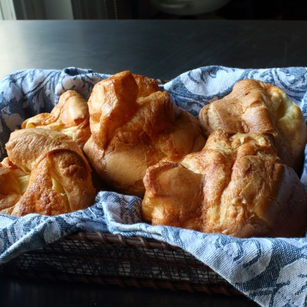

Yorshire Pudding

Description
As legend has it, Yorkshire puddings were traditionally cooked in a pan of fat, at the bottom of a hearth, underneath a large piece of roasting beef. The smoky heat from the fire, along with all the other goodness dripping into the pan from the meat, must've made for quite a delicious pastry. Though limited by modern ovens, we can still come close to the original by using real rendered beef fat, without which you're just eating a popover.
Ingredients
- 4 large eggs
- 1 teaspoon kosher salt
- 7/8 cup all-purpose flour
- 1 cup whole milk
- 3/4 cup melted beef fat
Steps
- Whisk eggs and salt together in a bowl until light and frothy. Whisk in flour and milk until smooth and lump-free; batter will be thin and barely coat the back of a spoon.
- Transfer batter to a 4-cup measuring cup and chill in the refrigerator, at least 15 minutes.
- Preheat oven to 400 degrees F (200 degrees C).
- Fill each cup of a 12-cup nonstick muffin tin with 1 tablespoon melted beef fat; use your finger to grease the sides and tops of the cups. Place the muffin tin on a baking sheet.
- Heat in the preheated oven on the middle rack until fat is smoking hot, 10 to 15 minutes.
- Remove from the oven and fill each muffin cup halfway full with batter.
- Bake pudding in the preheated oven until browned and fully puffed, about 25 minutes more. Remove from the oven and immediately poke a hole in the center of each to release steam. Serve hot, warm, or room-temperature.